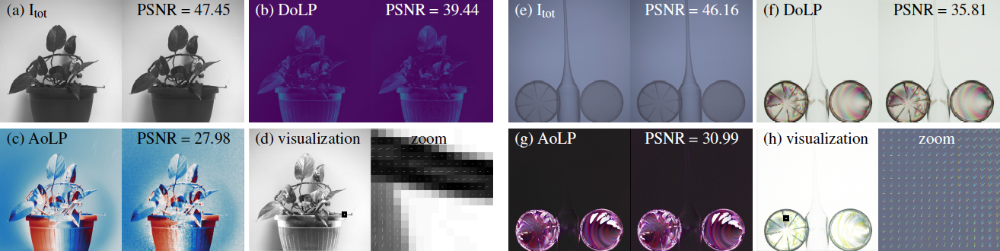

Left (a)-(d): Monochrome polarization demosaicking results for total intensity, DoLP, AoLP and visualization with unpolarized
illumination. Right (e)-(h): Color polarization demosaicking results for total intensity, DoLP, AoLP and visualization with polarized illumination.
Our proposed algorithm outperforms state of the art for both monochrome and color polarization focal plane arrays.
Abstract
Division-of-focal-plane (DoFP) polarization image sensors allow for snapshot imaging of linear polarization effects with inexpensive
and straightforward setups. However, conventional interpolation based image reconstruction methods for such sensors
produce unreliable and noisy estimates of quantities such as degree of linear polarization (DoLP) or angle of linear polarization
(AoLP).
In this paper, we propose a polarization demosaicking algorithm by inverting the polarization image formation
model for both monochrome and color DoFP cameras. Compared to previous interpolation methods, our approach can significantly
reduce noise induced artifacts and drastically increase the accuracy in estimating polarization states. We evaluate and
demonstrate the performance of the methods on a new high-resolution color polarization dataset. Simulation and experimental
results show that the proposed reconstruction and analysis tools offer an effective solution to polarization imaging.
Main results
Monochromatic Polarization Demosaicking
Two exemplary scenes in our dataset. The upper part is a ball scene with unpolar- ized background illumination, and the low part is a containers scene with polarized background illumination. The reconstruction quality is presented in PSNR for all the methods for comparison.
Color Polarization Demosaicking
Comparison of optimization based methods with different priors. From left to right are the ground truth (GT) data, TV prior, TV on both 1st and 2nd order derivatives (TV+2d), Huber penalty on 1st derivatives, Huber penalty on both 1st and 2nd order derivatives (Huber+2d), Huber penalty on 1st and 2nd order derivatives combined with BM3D prior (BM3D),
and Huber penalty on 1st and 2nd order derivatives combined with BM3D, cross-color channel prior (BM3D+CC). The proposed Huber penalty with 1st and 2nd derivatives outperforms other priors for all the three polarization components.
Experimental Results
Experimental results for both monochrome (left) and color (right) polarization cameras with the proposed reconstruction algo- rithm. We show reconstruction results of Itot, DoLP, and AoLP for two arbitrarily captured real scenes.
Polarization Image Dataset
To the best of our knowledge, existing polarization image datasets are monochromatic, and consist of a few scenes. High-resolution polarization images with color, are lacking for research. Therefore, we construct a polarization image dataset containing 40 carefully calibrated ground truth images with a wide range of scenes. We try to cover as many naturally occurring polarization effects as possible. We capture different scenes with various shapes, materials, and lighting conditions. In particular, polarized illumination is an essential and useful phenomenon in artifact diagnosis and industrial inspection. We include such images by capturing transparent objects in front of a highly polarized monitor. The following is a gallery of our polarization image dataset. The complete polarization image dataset can be found at [DOI:10.25781/KAUST-2VA2X]]